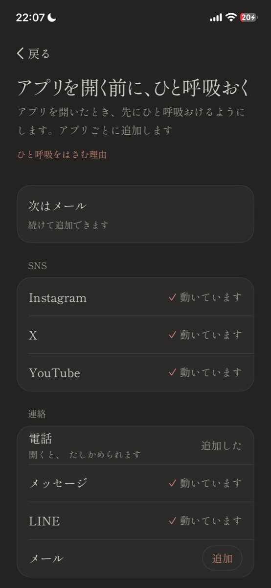
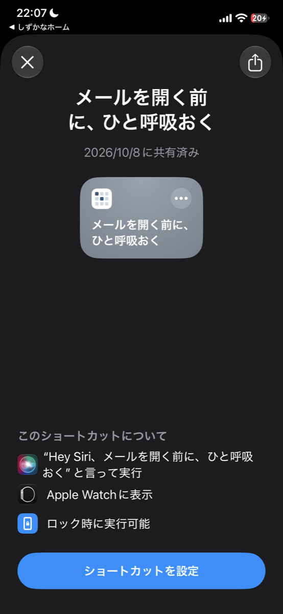
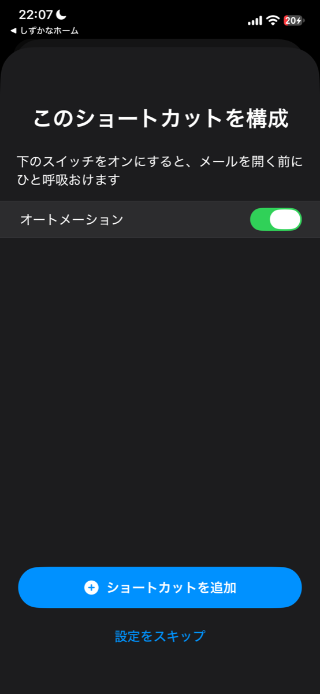

ホーム画面に置くのはウィジェット1つだけ。使うアプリの名前を文字で並べ、SNSなどを開く前に、10秒の深呼吸を1回はさめるアプリです。App Storeで見る
アプリの最初の画面で「始める」を押すと、ウィジェットを置く画面になります。
① ホーム画面の何もない所を長押しし、左上のボタンから「ウィジェットを追加」を押します。
② 一覧から「しずかなホーム」を選び、iOS 27では「特大」、iOS 26では「大」を1つ置きます。

③ 置いたら、しずかなホームに戻ります。自動で次の画面に進みます。
並べるアプリは、しずかなホームのアプリの「ホーム画面」で6つまで選べます。
開く前に、10秒の深呼吸をはさみます。iOS 27では、アプリごとに用意したショートカットを取り込むだけで使えます。

① しずかなホームのアプリで「アプリを開く前に深呼吸」を押し、「＋アプリを追加」を押します。一覧で、深呼吸をはさみたいアプリの「追加」を押します。初めてのときは案内が出るので、「ショートカットで追加」を押します。

② ショートカットAppが開き、「(選んだアプリ)を開く前に深呼吸」というショートカットが出ます。下の「ショートカットを設定」を押します。

③ 「下のスイッチをオンにすると、(選んだアプリ)を開く前に深呼吸をはさめます」の下にある「オートメーション」のスイッチをオンにして、「ショートカットを追加」を押します。iOS 27では「ショートカットを追加」が反応しないことがあります(Appleに報告済みの不具合です)。そのときは、その下の「設定をスキップ」を押すと取り込めます。
④ 左上の「しずかなホーム」で戻ります。追加したアプリの行には「まだ一度も出ていません」と出ます。そのアプリを開いて深呼吸の画面が出ると、「動いています」に変わります。
どんな画面が出るかは、深呼吸の画面の「試してみる」で先に見られます。試した分は回数に数えません。
iOS 26のときや、取り込みがうまくいかないときは、深呼吸の画面の「手順を見ながら設定する」から、ショートカットAppのオートメーションを自分で作れます。
ホーム画面を長押しして、下の点を押します。ウィジェットのページ以外のチェックを外します。アプリは消えず、Appライブラリから開けます。同じ手順で、すぐ戻せます。
しずかなホームのアプリの「ホーム画面」で「壁紙を無地にする」を開き、「壁紙を写真に保存」を押します。保存した画像を、iPhoneの設定の「壁紙」からホーム画面に選びます。ホーム画面の「カスタマイズ」で太陽のマークをオフにすると、壁紙とウィジェットの境目が見えなくなります。
深呼吸をはさむアプリは、しずかなホームのアプリで1つずつオフにできます。全部をまとめて止めることもできます。
① しずかなホームのアプリで、「アプリを開く前に深呼吸」を押します。
② 止めたいアプリの右のスイッチをオフにします。オフにしたアプリは、開いても深呼吸の画面が出ません。オンに戻すと、また出ます。
③ 全部をしばらく止めるときは、「深呼吸を使う」をオフにします。オンに戻せば、前と同じアプリで出ます。
無料のあいだは、オンのうち一番上のアプリ1つだけで深呼吸の画面が出ます。
完全にやめるときは、ショートカットAppの「オートメーション」で、そのアプリのオートメーションを削除します。
あとでまた使うときは、「深呼吸をはさむアプリを追加する」の手順で、もう一度追加できます。
iPhoneの設定の「通知」から「時刻指定要約」を選ぶと、通知を1日3回などにまとめて受け取れます。全部をオフにしなくても使えます。
しずかなホームのアプリの「集中する時間」から始めます(有料版)。25分・50分・90分か、自分で選んだ長さのあいだ、選んだアプリを開けなくします。集中のあいだ、ウィジェットにはアプリを並べず、残りの時間だけを出します。ウィジェットの「集中」からも始められます。
集中のあいだ開かないアプリは、iPhoneのスクリーンタイムの一覧から自分で選びます。「終える」でいつでも終えられます。
しずかなホームのアプリの「ホーム画面」の「着せ替え」で、藍・余白・白黒から選べます。ウィジェットとアプリの色と文字が変わります。夜の色は、iPhoneのダークモードに合わせて変わります。藍のほかの2つは有料版です。
しずかなホームのアプリの「ホーム画面」で「日付と時間の線」をオフにすると、ウィジェットに出るのはアプリの名前と「設定」(有料版は「集中」も)だけになります。集中しているあいだは、残りの時間の線が出ます。
開く前に一度止まると、開くか、やめておくかを、その場で自分で選べます。開く前に間を置く仕組みについては、こうした研究があります。